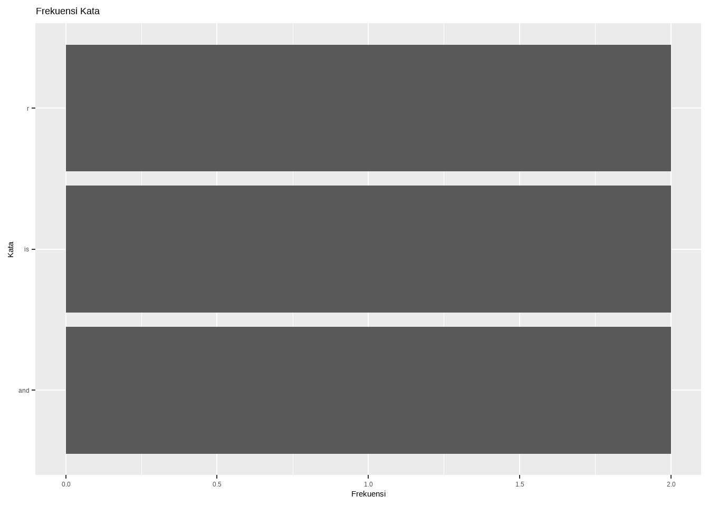
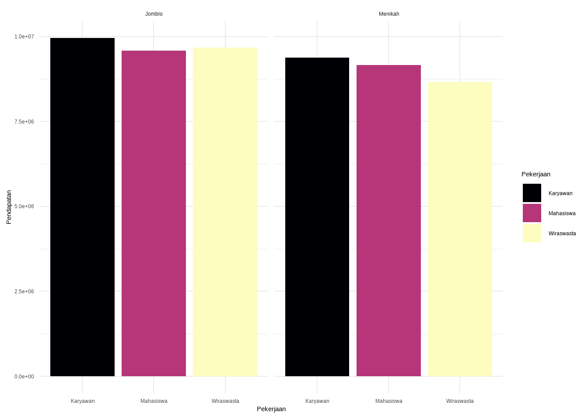
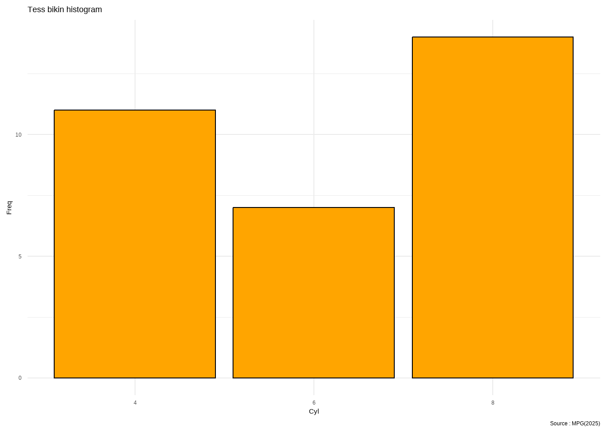

library(tidyverse) #For data structure
library(readr) # For reading file
library(readxl) # for reading xl
library(dplyr) # for data manipulation
library(esquisse) # For plot easyer
library(lubridate) # For date editor
library(skimr) # Data exploration easyly
library(DataExplorer) # Data ecploration
library(ggplot2) # For plot
library(dlookr) # For EDA
library(stats)
library(designer) # untuk membuat dashboard
library(flextable)
library(DT)
library(tidytext)
library(ggiraph)
library(gapminder)
library(modeldata)R Basic
Coding
Ini mungkin sintaks yang saya butuhkan setiap hari saat menganalisa data sehingga saya harus buat summary yang bisa dijadikan sebagai panduan..
Library
Pustaka yang saya butuhkan adalah:
Coding basic
FOR
Sintaks umumnya adalah :
for (variable in vector) {
kondisi
}for(i in sample(100:200, 5, replace = T)){
print(paste("Nomor ", i))
}[1] "Nomor 119"
[1] "Nomor 104"
[1] "Nomor 169"
[1] "Nomor 152"
[1] "Nomor 113"# fungsi `sample` adalah sintaks untuk mencari nilai random
# sample(100:200,5) buatkan angka dari 100-200 sebanyak 5 , T = boleh berulangvektor <- c("Ardi", "Gilang", "Ita")
for (nama in vektor) {
print(paste("Nama anggota adalah", nama))
}[1] "Nama anggota adalah Ardi"
[1] "Nama anggota adalah Gilang"
[1] "Nama anggota adalah Ita"Buatlah program R yang menggunakan for loop untuk mencetak semua angka dari 1 hingga 50 yang merupakan kelipatan 3
i <- 1
for (i in 1:50) {
if (i %% 3 == 0){
print(paste("Angka kelipatan 3 adalah ", i))
}
i <- i+1
}[1] "Angka kelipatan 3 adalah 3"
[1] "Angka kelipatan 3 adalah 6"
[1] "Angka kelipatan 3 adalah 9"
[1] "Angka kelipatan 3 adalah 12"
[1] "Angka kelipatan 3 adalah 15"
[1] "Angka kelipatan 3 adalah 18"
[1] "Angka kelipatan 3 adalah 21"
[1] "Angka kelipatan 3 adalah 24"
[1] "Angka kelipatan 3 adalah 27"
[1] "Angka kelipatan 3 adalah 30"
[1] "Angka kelipatan 3 adalah 33"
[1] "Angka kelipatan 3 adalah 36"
[1] "Angka kelipatan 3 adalah 39"
[1] "Angka kelipatan 3 adalah 42"
[1] "Angka kelipatan 3 adalah 45"
[1] "Angka kelipatan 3 adalah 48"WHILE
i <- 1
while (i<=4) {
print(paste("iterasi ke", i))
i <- i+1
}[1] "iterasi ke 1"
[1] "iterasi ke 2"
[1] "iterasi ke 3"
[1] "iterasi ke 4"Total <- 0
i <- 1
while (i >= 50) {
Total <- Total + i
print(paste("Iterasi ke ", i, "Totalnya adalah", Total))
i <- i+1
}nilai <- 20
while (nilai > 0) {
print(paste("Nilai akhirnya adlaah ", nilai))
nilai <- nilai - 5
}[1] "Nilai akhirnya adlaah 20"
[1] "Nilai akhirnya adlaah 15"
[1] "Nilai akhirnya adlaah 10"
[1] "Nilai akhirnya adlaah 5"i <- 1
while (TRUE) {
print(paste("iterasi ke ", i))
if (i == 5) {
break
}
i <- i+1
}[1] "iterasi ke 1"
[1] "iterasi ke 2"
[1] "iterasi ke 3"
[1] "iterasi ke 4"
[1] "iterasi ke 5"Pertanyaan: Buatlah program R yang menggunakan while loop untuk menghitung jumlah (total) dari semua bilangan genap mulai dari 2 hingga 100.
total <- 0
i <- 2
while (i <= 100) {
total <- total + i
i <- i + 2
}
print(paste("Jumlah total bilangan genap dari 2 hingga 100 adalah", total))[1] "Jumlah total bilangan genap dari 2 hingga 100 adalah 2550"if, else, else if
Nilai <- 25
if(Nilai >= 90){
print("Anda mendapatkan Grade A")
} else if (Nilai >= 80){
print("Anda mendapatkan Grade B")
} else if(Nilai >=70){
print("Anda mendapatkan Grade C")
} else if(Nilai >=50){
print("Anda mendapatkan Grade D")
} else{
print("Gak lulus !! Bodoh bat orangdah..")
}[1] "Gak lulus !! Bodoh bat orangdah.."function
luas_persegi_panjang <- function(panjang, lebar){
luas <- panjang*lebar
print("luasnya adalah :")
return(luas)
}
luas_persegi_panjang(5, 10)[1] "luasnya adalah :"[1] 50luas_lingkaran <- function(r, phi = 3.14){
l_ling = phi * r^2
return(paste("luasnya adalah", l_ling))
}
luas_lingkaran(5)[1] "luasnya adalah 78.5"halo_dunia <- function(nama){
print(paste("Welcom back ", nama, "Didunia maya"))
}
halo_dunia("Andi")[1] "Welcom back Andi Didunia maya"Cekgenapganjil <- function(Angka){
if(Angka %% 2 == 0){
return(paste(Angka, "Angkanya bertype :Genap"))
}else{
return(paste(Angka,"Angkanya bertype : Ganjil"))
}
}
Cekgenapganjil(5)[1] "5 Angkanya bertype : Ganjil"Read data
#Data_telegram <- read.csv("D:/STATS/TELEGRAM.CSV", sep = ",")
#View(Data_telegram)Build data
set.seed(20)
Data_set1 <- data.frame(
ID = 101:200,
Nama = paste("Nama",101:200),
Usia = sample(19:60, 100, replace = TRUE),
Gender = factor(sample(c("Laki-laki", "Perempuan"), 100, replace = TRUE)),
Pendapatan = round(runif(100, 3, 10) * 1000000, 0),
Pekerjaan = factor(sample(c("Karyawan", "Mahasiswa", "Wiraswasta"), 100, replace = TRUE)),
Status_menikah = sample(c(TRUE, FALSE), 100, replace = TRUE),
Rating = sample(1:5, 100, replace = TRUE),
Tanggal = sample(seq(as.Date('2023-01-01'), as.Date('2023-12-31'), by = "day"), 100, replace = TRUE),
Waktu = format(sample(seq(as.POSIXct("2023-01-01 00:00:00"), as.POSIXct("2023-12-31 23:59:59"), by = "min"), 100, replace = TRUE), "%H:%M:%S")
)Kumpulan sintaks
a = paste("Nama saya", 101) >> Digunakan untuk menggabungkan string + angka lain
sample(x, size, replace = TRUE, prob = NULL) >> Membuat sample baris
x = Sumber data (Misalnya, Vektor (yg mnggunakan huruf c), atau angka (60:100))
size = ukuran sample
replace untuk pengmbalian angka? default FALSE
factor(x, levels = NULL, labels = NULL, Ordered = FALSE) >> membuat data bertype factor
x = sumber data (c("Menikah","Mahasiswa", "Wiraswasta"))
round(x, digits = 0) >> Pembulatan desimal
x = adalah angka yang akan dibulatkan
digits = jumlah angka desimal
runif(n, min = 0, max = 1) >> menghasilkan angka acak dari distribusi uniform
n = jumlah angka acak
min = batas bawah angka acak
max = batas atas angka acak
runif(100, min = 18, max = 60) > membuat data umur
seq(from, to, by) >> membuat urutan angka dalam interval waktu
from = angka awal
to = angka akhir
by = kelipatan
seq(1, 20, by 5)- sample(): Mengambil sampel acak.
- factor(): Mengubah data menjadi tipe kategorikal.
- round(): Membulatkan angka.
- runif(): Menghasilkan angka acak seragam.
- seq(): Membuat urutan angka dengan pola tertentu.
View data
Head and tail
head(Data_set1,5) ID Nama Usia Gender Pendapatan Pekerjaan Status_menikah Rating
1 101 Nama 101 56 Perempuan 9667184 Wiraswasta FALSE 5
2 102 Nama 102 20 Perempuan 9055324 Mahasiswa TRUE 3
3 103 Nama 103 52 Laki-laki 3460025 Wiraswasta TRUE 5
4 104 Nama 104 47 Laki-laki 9958127 Karyawan FALSE 4
5 105 Nama 105 48 Perempuan 4950844 Karyawan TRUE 4
Tanggal Waktu
1 2023-06-11 09:53:00
2 2023-12-30 08:18:00
3 2023-02-06 22:09:00
4 2023-11-10 03:23:00
5 2023-08-05 02:10:00tail(Data_set1, 5) ID Nama Usia Gender Pendapatan Pekerjaan Status_menikah Rating
96 196 Nama 196 46 Perempuan 3506792 Mahasiswa FALSE 1
97 197 Nama 197 21 Perempuan 7673155 Karyawan FALSE 3
98 198 Nama 198 34 Laki-laki 3851207 Wiraswasta FALSE 5
99 199 Nama 199 58 Laki-laki 6927204 Mahasiswa FALSE 5
100 200 Nama 200 21 Perempuan 5773298 Wiraswasta TRUE 1
Tanggal Waktu
96 2023-04-19 16:37:00
97 2023-02-24 21:51:00
98 2023-01-11 03:40:00
99 2023-09-09 08:33:00
100 2023-11-15 00:18:00Data type view
str(Data_set1)'data.frame': 100 obs. of 10 variables:
$ ID : int 101 102 103 104 105 106 107 108 109 110 ...
$ Nama : chr "Nama 101" "Nama 102" "Nama 103" "Nama 104" ...
$ Usia : int 56 20 52 47 48 59 21 32 26 27 ...
$ Gender : Factor w/ 2 levels "Laki-laki","Perempuan": 2 2 1 1 2 2 1 1 2 1 ...
$ Pendapatan : num 9667184 9055324 3460025 9958127 4950844 ...
$ Pekerjaan : Factor w/ 3 levels "Karyawan","Mahasiswa",..: 3 2 3 1 1 1 2 3 3 2 ...
$ Status_menikah: logi FALSE TRUE TRUE FALSE TRUE TRUE ...
$ Rating : int 5 3 5 4 4 2 2 3 4 4 ...
$ Tanggal : Date, format: "2023-06-11" "2023-12-30" ...
$ Waktu : chr "09:53:00" "08:18:00" "22:09:00" "03:23:00" ...skim(Data_set1)| Name | Data_set1 |
| Number of rows | 100 |
| Number of columns | 10 |
| _______________________ | |
| Column type frequency: | |
| character | 2 |
| Date | 1 |
| factor | 2 |
| logical | 1 |
| numeric | 4 |
| ________________________ | |
| Group variables | None |
Variable type: character
| skim_variable | n_missing | complete_rate | min | max | empty | n_unique | whitespace |
|---|---|---|---|---|---|---|---|
| Nama | 0 | 1 | 8 | 8 | 0 | 100 | 0 |
| Waktu | 0 | 1 | 8 | 8 | 0 | 97 | 0 |
Variable type: Date
| skim_variable | n_missing | complete_rate | min | max | median | n_unique |
|---|---|---|---|---|---|---|
| Tanggal | 0 | 1 | 2023-01-01 | 2023-12-30 | 2023-05-22 | 90 |
Variable type: factor
| skim_variable | n_missing | complete_rate | ordered | n_unique | top_counts |
|---|---|---|---|---|---|
| Gender | 0 | 1 | FALSE | 2 | Per: 58, Lak: 42 |
| Pekerjaan | 0 | 1 | FALSE | 3 | Kar: 36, Mah: 34, Wir: 30 |
Variable type: logical
| skim_variable | n_missing | complete_rate | mean | count |
|---|---|---|---|---|
| Status_menikah | 0 | 1 | 0.49 | FAL: 51, TRU: 49 |
Variable type: numeric
| skim_variable | n_missing | complete_rate | mean | sd | p0 | p25 | p50 | p75 | p100 | hist |
|---|---|---|---|---|---|---|---|---|---|---|
| ID | 0 | 1 | 150.50 | 29.01 | 101 | 125.75 | 150.5 | 175.25 | 200 | ▇▇▇▇▇ |
| Usia | 0 | 1 | 39.74 | 12.65 | 19 | 27.00 | 41.0 | 51.00 | 60 | ▇▃▅▇▇ |
| Pendapatan | 0 | 1 | 6717849.67 | 1889415.60 | 3147637 | 5378641.75 | 7092762.5 | 8075857.25 | 9958127 | ▅▆▆▇▆ |
| Rating | 0 | 1 | 3.08 | 1.38 | 1 | 2.00 | 3.0 | 4.00 | 5 | ▆▇▇▇▇ |
Melihat nama colom
names(Data_set1) [1] "ID" "Nama" "Usia" "Gender"
[5] "Pendapatan" "Pekerjaan" "Status_menikah" "Rating"
[9] "Tanggal" "Waktu" colnames(Data_set1) [1] "ID" "Nama" "Usia" "Gender"
[5] "Pendapatan" "Pekerjaan" "Status_menikah" "Rating"
[9] "Tanggal" "Waktu" Data Cleaning
Editing data
str(Data_set1)'data.frame': 100 obs. of 10 variables:
$ ID : int 101 102 103 104 105 106 107 108 109 110 ...
$ Nama : chr "Nama 101" "Nama 102" "Nama 103" "Nama 104" ...
$ Usia : int 56 20 52 47 48 59 21 32 26 27 ...
$ Gender : Factor w/ 2 levels "Laki-laki","Perempuan": 2 2 1 1 2 2 1 1 2 1 ...
$ Pendapatan : num 9667184 9055324 3460025 9958127 4950844 ...
$ Pekerjaan : Factor w/ 3 levels "Karyawan","Mahasiswa",..: 3 2 3 1 1 1 2 3 3 2 ...
$ Status_menikah: logi FALSE TRUE TRUE FALSE TRUE TRUE ...
$ Rating : int 5 3 5 4 4 2 2 3 4 4 ...
$ Tanggal : Date, format: "2023-06-11" "2023-12-30" ...
$ Waktu : chr "09:53:00" "08:18:00" "22:09:00" "03:23:00" ...Mengubah type data
Data_set1$Rating <- as.factor(Data_set1$Rating)
str(Data_set1)'data.frame': 100 obs. of 10 variables:
$ ID : int 101 102 103 104 105 106 107 108 109 110 ...
$ Nama : chr "Nama 101" "Nama 102" "Nama 103" "Nama 104" ...
$ Usia : int 56 20 52 47 48 59 21 32 26 27 ...
$ Gender : Factor w/ 2 levels "Laki-laki","Perempuan": 2 2 1 1 2 2 1 1 2 1 ...
$ Pendapatan : num 9667184 9055324 3460025 9958127 4950844 ...
$ Pekerjaan : Factor w/ 3 levels "Karyawan","Mahasiswa",..: 3 2 3 1 1 1 2 3 3 2 ...
$ Status_menikah: logi FALSE TRUE TRUE FALSE TRUE TRUE ...
$ Rating : Factor w/ 5 levels "1","2","3","4",..: 5 3 5 4 4 2 2 3 4 4 ...
$ Tanggal : Date, format: "2023-06-11" "2023-12-30" ...
$ Waktu : chr "09:53:00" "08:18:00" "22:09:00" "03:23:00" ...Mengubah posisi colom
Dengan menggunakan index saja..
df[, c(1,3,2,4,5,6,7)] > ini adalah cara mudah mengambil barisdf <- Data_set1[, c(1, 3,2,4,5,6,7,8,9,10)]
head(df,5) ID Usia Nama Gender Pendapatan Pekerjaan Status_menikah Rating
1 101 56 Nama 101 Perempuan 9667184 Wiraswasta FALSE 5
2 102 20 Nama 102 Perempuan 9055324 Mahasiswa TRUE 3
3 103 52 Nama 103 Laki-laki 3460025 Wiraswasta TRUE 5
4 104 47 Nama 104 Laki-laki 9958127 Karyawan FALSE 4
5 105 48 Nama 105 Perempuan 4950844 Karyawan TRUE 4
Tanggal Waktu
1 2023-06-11 09:53:00
2 2023-12-30 08:18:00
3 2023-02-06 22:09:00
4 2023-11-10 03:23:00
5 2023-08-05 02:10:00Selecting data
Mengambil Colom tertentu
head(Data_set1[, 2],5) #menambil colom ke 2[1] "Nama 101" "Nama 102" "Nama 103" "Nama 104" "Nama 105"head(Data_set1[, c(1,2,5,6)],5) # Mengambil beberapa kolom dengan index ID Nama Pendapatan Pekerjaan
1 101 Nama 101 9667184 Wiraswasta
2 102 Nama 102 9055324 Mahasiswa
3 103 Nama 103 3460025 Wiraswasta
4 104 Nama 104 9958127 Karyawan
5 105 Nama 105 4950844 Karyawanhead(Data_set1[, c("Nama", "Usia", "Tanggal", "Waktu")], 5) # Dengan nama header Nama Usia Tanggal Waktu
1 Nama 101 56 2023-06-11 09:53:00
2 Nama 102 20 2023-12-30 08:18:00
3 Nama 103 52 2023-02-06 22:09:00
4 Nama 104 47 2023-11-10 03:23:00
5 Nama 105 48 2023-08-05 02:10:00Mengambil baris tertentu
Tanpa kondisi
Data_set1[1,] # Mengambil baris 1 ID Nama Usia Gender Pendapatan Pekerjaan Status_menikah Rating
1 101 Nama 101 56 Perempuan 9667184 Wiraswasta FALSE 5
Tanggal Waktu
1 2023-06-11 09:53:00Data_set1[c(1,3,5),] # Mengambil beberapa baris ID Nama Usia Gender Pendapatan Pekerjaan Status_menikah Rating
1 101 Nama 101 56 Perempuan 9667184 Wiraswasta FALSE 5
3 103 Nama 103 52 Laki-laki 3460025 Wiraswasta TRUE 5
5 105 Nama 105 48 Perempuan 4950844 Karyawan TRUE 4
Tanggal Waktu
1 2023-06-11 09:53:00
3 2023-02-06 22:09:00
5 2023-08-05 02:10:00Data_set1[1:10,] # MEngambil beberapa baris ID Nama Usia Gender Pendapatan Pekerjaan Status_menikah Rating
1 101 Nama 101 56 Perempuan 9667184 Wiraswasta FALSE 5
2 102 Nama 102 20 Perempuan 9055324 Mahasiswa TRUE 3
3 103 Nama 103 52 Laki-laki 3460025 Wiraswasta TRUE 5
4 104 Nama 104 47 Laki-laki 9958127 Karyawan FALSE 4
5 105 Nama 105 48 Perempuan 4950844 Karyawan TRUE 4
6 106 Nama 106 59 Perempuan 3220544 Karyawan TRUE 2
7 107 Nama 107 21 Laki-laki 4769542 Mahasiswa FALSE 2
8 108 Nama 108 32 Laki-laki 6602401 Wiraswasta FALSE 3
9 109 Nama 109 26 Perempuan 7312965 Wiraswasta FALSE 4
10 110 Nama 110 27 Laki-laki 6664000 Mahasiswa FALSE 4
Tanggal Waktu
1 2023-06-11 09:53:00
2 2023-12-30 08:18:00
3 2023-02-06 22:09:00
4 2023-11-10 03:23:00
5 2023-08-05 02:10:00
6 2023-06-13 07:10:00
7 2023-10-18 12:53:00
8 2023-10-14 13:13:00
9 2023-01-23 01:54:00
10 2023-01-22 09:40:00Dengan kondisi
head(Data_set1, 5) ID Nama Usia Gender Pendapatan Pekerjaan Status_menikah Rating
1 101 Nama 101 56 Perempuan 9667184 Wiraswasta FALSE 5
2 102 Nama 102 20 Perempuan 9055324 Mahasiswa TRUE 3
3 103 Nama 103 52 Laki-laki 3460025 Wiraswasta TRUE 5
4 104 Nama 104 47 Laki-laki 9958127 Karyawan FALSE 4
5 105 Nama 105 48 Perempuan 4950844 Karyawan TRUE 4
Tanggal Waktu
1 2023-06-11 09:53:00
2 2023-12-30 08:18:00
3 2023-02-06 22:09:00
4 2023-11-10 03:23:00
5 2023-08-05 02:10:00# Reguler
head(Data_set1[Data_set1$Usia > 30, ],5) ID Nama Usia Gender Pendapatan Pekerjaan Status_menikah Rating
1 101 Nama 101 56 Perempuan 9667184 Wiraswasta FALSE 5
3 103 Nama 103 52 Laki-laki 3460025 Wiraswasta TRUE 5
4 104 Nama 104 47 Laki-laki 9958127 Karyawan FALSE 4
5 105 Nama 105 48 Perempuan 4950844 Karyawan TRUE 4
6 106 Nama 106 59 Perempuan 3220544 Karyawan TRUE 2
Tanggal Waktu
1 2023-06-11 09:53:00
3 2023-02-06 22:09:00
4 2023-11-10 03:23:00
5 2023-08-05 02:10:00
6 2023-06-13 07:10:00# Dengan atau "|"
head(Data_set1[Data_set1$Usia <=29 | Data_set1$Pekerjaan=="Karyawan", ], 2) ID Nama Usia Gender Pendapatan Pekerjaan Status_menikah Rating
2 102 Nama 102 20 Perempuan 9055324 Mahasiswa TRUE 3
4 104 Nama 104 47 Laki-laki 9958127 Karyawan FALSE 4
Tanggal Waktu
2 2023-12-30 08:18:00
4 2023-11-10 03:23:00# Dengan Dan "&"
head(Data_set1[Data_set1$Usia >45 & Data_set1$Pekerjaan=="Karyawan", ], 2) ID Nama Usia Gender Pendapatan Pekerjaan Status_menikah Rating
4 104 Nama 104 47 Laki-laki 9958127 Karyawan FALSE 4
5 105 Nama 105 48 Perempuan 4950844 Karyawan TRUE 4
Tanggal Waktu
4 2023-11-10 03:23:00
5 2023-08-05 02:10:00Menambahkan colom
# Mengambil 4 digit terakhir dari data
KD_toko = substr(Data_set1$Nama, 1, 4)
head(KD_toko,5)[1] "Nama" "Nama" "Nama" "Nama" "Nama"# Mengambil 4 digit dalam data set
KD_toko1 = substr(Data_set1$Nama, 3, 6) # ini menambil dari data k2 3 sampai 6 sisa kita mau ambil berapa digit
head(KD_toko1, 5)[1] "ma 1" "ma 1" "ma 1" "ma 1" "ma 1"# Mengambil data terakhir
KD_toko2 <- substr(Data_set1$Nama, nchar(Data_set1$Nama)-3, nchar(Data_set1$Nama))
head(KD_toko2,5)[1] " 101" " 102" " 103" " 104" " 105"Jika sudah dibuat maka sisa menggabungkan saja..
Data_full <- cbind(Data_set1, KD_toko)
head(Data_full, 5) ID Nama Usia Gender Pendapatan Pekerjaan Status_menikah Rating
1 101 Nama 101 56 Perempuan 9667184 Wiraswasta FALSE 5
2 102 Nama 102 20 Perempuan 9055324 Mahasiswa TRUE 3
3 103 Nama 103 52 Laki-laki 3460025 Wiraswasta TRUE 5
4 104 Nama 104 47 Laki-laki 9958127 Karyawan FALSE 4
5 105 Nama 105 48 Perempuan 4950844 Karyawan TRUE 4
Tanggal Waktu KD_toko
1 2023-06-11 09:53:00 Nama
2 2023-12-30 08:18:00 Nama
3 2023-02-06 22:09:00 Nama
4 2023-11-10 03:23:00 Nama
5 2023-08-05 02:10:00 NamaData_full <- Data_full[, c(1,11,2,3,4,5,6,7,8,9,10,11)]
head(Data_full, 5) ID KD_toko Nama Usia Gender Pendapatan Pekerjaan Status_menikah
1 101 Nama Nama 101 56 Perempuan 9667184 Wiraswasta FALSE
2 102 Nama Nama 102 20 Perempuan 9055324 Mahasiswa TRUE
3 103 Nama Nama 103 52 Laki-laki 3460025 Wiraswasta TRUE
4 104 Nama Nama 104 47 Laki-laki 9958127 Karyawan FALSE
5 105 Nama Nama 105 48 Perempuan 4950844 Karyawan TRUE
Rating Tanggal Waktu KD_toko.1
1 5 2023-06-11 09:53:00 Nama
2 3 2023-12-30 08:18:00 Nama
3 5 2023-02-06 22:09:00 Nama
4 4 2023-11-10 03:23:00 Nama
5 4 2023-08-05 02:10:00 NamaMemilih nama colom tertentu
Categorical_colm <- names(Data_set1)[sapply(Data_set1, is.integer)]
Categorical_colm[1] "ID" "Usia"sapply > digunakan u ntuk menghasilkan data vektor atau sederhana.Checking
Apa yang harus dicheck?
Duplicat
Melihat semua data duplicated :
Data_set1[duplicated(Data_set1)|duplicated(Data_set1), ] [1] ID Nama Usia Gender Pendapatan
[6] Pekerjaan Status_menikah Rating Tanggal Waktu
<0 rows> (or 0-length row.names)Menghapus dengan cara :
data_uniq <- Data_set1[!duplicated(Data_set1), ]mengahapus data duplicate berdasarkan column tertentu :
data_uniq <- Data_set1[!duplicated(Data_set1$Nama), ]Missing Value
Cek seluruh data set
sum(is.na(Data_set1))[1] 0Menghitung jumalh missing value per kolom
colSums(is.na(Data_set1)) ID Nama Usia Gender Pendapatan
0 0 0 0 0
Pekerjaan Status_menikah Rating Tanggal Waktu
0 0 0 0 0 Menghitung jumalh missing value per baris
Data_set1[!complete.cases(Data_set1), ] [1] ID Nama Usia Gender Pendapatan
[6] Pekerjaan Status_menikah Rating Tanggal Waktu
<0 rows> (or 0-length row.names)Menghapus missing value
data_clean <- Data_set1 %>%
drop_na()Mengisi Missing value
Mengganti dengan median
data_clean$Usia[is.na(data_clean$Usia)] <- median(data_clean$Usia, na.rm = T)mengganti dengan rata-rata
data_clean$Usia[is.na(data_clean$Usia)] <- mean(data_clean$Usia, na.rm = T)Outlier
#install.packages("outliers")
library(outliers)grubbs.test(data_clean$ID)
Grubbs test for one outlier
data: data_clean$ID
G = 1.7062, U = 0.9703, p-value = 1
alternative hypothesis: highest value 200 is an outlierCara membaca data diatas nilai > 200 adalah outlier
Selain dengan library outliers kita bisa menggunakan boxplot untuk melihat data outilier..
Exploratory Data Analyst
Mengerti tentang data secara menyeluruh
str(data_clean)'data.frame': 100 obs. of 10 variables:
$ ID : int 101 102 103 104 105 106 107 108 109 110 ...
$ Nama : chr "Nama 101" "Nama 102" "Nama 103" "Nama 104" ...
$ Usia : num 56 20 52 47 48 59 21 32 26 27 ...
$ Gender : Factor w/ 2 levels "Laki-laki","Perempuan": 2 2 1 1 2 2 1 1 2 1 ...
$ Pendapatan : num 9667184 9055324 3460025 9958127 4950844 ...
$ Pekerjaan : Factor w/ 3 levels "Karyawan","Mahasiswa",..: 3 2 3 1 1 1 2 3 3 2 ...
$ Status_menikah: logi FALSE TRUE TRUE FALSE TRUE TRUE ...
$ Rating : Factor w/ 5 levels "1","2","3","4",..: 5 3 5 4 4 2 2 3 4 4 ...
$ Tanggal : Date, format: "2023-06-11" "2023-12-30" ...
$ Waktu : chr "09:53:00" "08:18:00" "22:09:00" "03:23:00" ...Lubridate
sintaks umum lubridate :
ymd(), mdy(), dmy() > perubahan tanggal
hm(), ms(), dan hms() > perubahan jam
year(), month(), day() > Mengestrak tahun bulan tanggal
hour(), minute(), second() > Mengestrak jam menit detik
month(data, label = TRUE) > Singakatan bulan
months(data) = Nama Bulan fullMerubah type tanggal
lubridate1 = Data_set1
lubridate1$Tanggal <- as.Date(lubridate1$Tanggal)
head(lubridate1, 5) ID Nama Usia Gender Pendapatan Pekerjaan Status_menikah Rating
1 101 Nama 101 56 Perempuan 9667184 Wiraswasta FALSE 5
2 102 Nama 102 20 Perempuan 9055324 Mahasiswa TRUE 3
3 103 Nama 103 52 Laki-laki 3460025 Wiraswasta TRUE 5
4 104 Nama 104 47 Laki-laki 9958127 Karyawan FALSE 4
5 105 Nama 105 48 Perempuan 4950844 Karyawan TRUE 4
Tanggal Waktu
1 2023-06-11 09:53:00
2 2023-12-30 08:18:00
3 2023-02-06 22:09:00
4 2023-11-10 03:23:00
5 2023-08-05 02:10:00Merubah type waktu
lubridate1 %>%
mutate(Waktu = hms(Waktu)) %>%
mutate(Waktu = format(Waktu, "%H:%M:S%")) %>%
head(n = 5) ID Nama Usia Gender Pendapatan Pekerjaan Status_menikah Rating
1 101 Nama 101 56 Perempuan 9667184 Wiraswasta FALSE 5
2 102 Nama 102 20 Perempuan 9055324 Mahasiswa TRUE 3
3 103 Nama 103 52 Laki-laki 3460025 Wiraswasta TRUE 5
4 104 Nama 104 47 Laki-laki 9958127 Karyawan FALSE 4
5 105 Nama 105 48 Perempuan 4950844 Karyawan TRUE 4
Tanggal Waktu
1 2023-06-11 9H 53M 0S
2 2023-12-30 8H 18M 0S
3 2023-02-06 22H 9M 0S
4 2023-11-10 3H 23M 0S
5 2023-08-05 2H 10M 0Sstr(lubridate1)'data.frame': 100 obs. of 10 variables:
$ ID : int 101 102 103 104 105 106 107 108 109 110 ...
$ Nama : chr "Nama 101" "Nama 102" "Nama 103" "Nama 104" ...
$ Usia : int 56 20 52 47 48 59 21 32 26 27 ...
$ Gender : Factor w/ 2 levels "Laki-laki","Perempuan": 2 2 1 1 2 2 1 1 2 1 ...
$ Pendapatan : num 9667184 9055324 3460025 9958127 4950844 ...
$ Pekerjaan : Factor w/ 3 levels "Karyawan","Mahasiswa",..: 3 2 3 1 1 1 2 3 3 2 ...
$ Status_menikah: logi FALSE TRUE TRUE FALSE TRUE TRUE ...
$ Rating : Factor w/ 5 levels "1","2","3","4",..: 5 3 5 4 4 2 2 3 4 4 ...
$ Tanggal : Date, format: "2023-06-11" "2023-12-30" ...
$ Waktu : chr "09:53:00" "08:18:00" "22:09:00" "03:23:00" ...Mengambil data tgl bln thn
lubridate1 %>%
mutate(tgl = day(Tanggal)) %>%
mutate(hari = wday(Tanggal, label = TRUE)) %>%
mutate(bulan = month(Tanggal, label = TRUE)) %>%
mutate(thn = year(Tanggal)) %>%
head(n =5) ID Nama Usia Gender Pendapatan Pekerjaan Status_menikah Rating
1 101 Nama 101 56 Perempuan 9667184 Wiraswasta FALSE 5
2 102 Nama 102 20 Perempuan 9055324 Mahasiswa TRUE 3
3 103 Nama 103 52 Laki-laki 3460025 Wiraswasta TRUE 5
4 104 Nama 104 47 Laki-laki 9958127 Karyawan FALSE 4
5 105 Nama 105 48 Perempuan 4950844 Karyawan TRUE 4
Tanggal Waktu tgl hari bulan thn
1 2023-06-11 09:53:00 11 Sun Jun 2023
2 2023-12-30 08:18:00 30 Sat Dec 2023
3 2023-02-06 22:09:00 6 Mon Feb 2023
4 2023-11-10 03:23:00 10 Fri Nov 2023
5 2023-08-05 02:10:00 5 Sat Aug 2023dplyr
Sintaks dasar pada dplyr yang bisa diguanakn adalah :
Select
# Memilih dengan nama colom
df2 <- select(data_clean, ID, Nama, Usia, Gender, Pendapatan)
head(df2, 5) ID Nama Usia Gender Pendapatan
1 101 Nama 101 56 Perempuan 9667184
2 102 Nama 102 20 Perempuan 9055324
3 103 Nama 103 52 Laki-laki 3460025
4 104 Nama 104 47 Laki-laki 9958127
5 105 Nama 105 48 Perempuan 4950844# Memilih semua dengan kategori
df1 <- data_clean %>%
select_if(is.numeric)
df3 <- data_clean %>%
select_if(is.character)
head(df1, 5) ID Usia Pendapatan
1 101 56 9667184
2 102 20 9055324
3 103 52 3460025
4 104 47 9958127
5 105 48 4950844head(df3, 5) Nama Waktu
1 Nama 101 09:53:00
2 Nama 102 08:18:00
3 Nama 103 22:09:00
4 Nama 104 03:23:00
5 Nama 105 02:10:00head(data_clean)Filter
Data_set_karyawan <- data_clean %>%
filter(Pekerjaan == "Karyawan" & Usia >= 40)
Data_set_karyawan
#Note : bisa dikondisikan dengan | or dalam komputasi filterMutate
Digunakan untuk menambahhkan atau memodifikasi variable data..
df_mutated <- data_clean %>%
mutate(Kdtoko = substr(data_clean$Nama, 1, 4))
df_mutatednewdf <- data_clean %>%
mutate(storecode = substr(data_clean$Nama, nchar(data_clean$Nama)-3, nchar(data_clean$Nama)))
newdfdata_clean %>%
mutate(Gender = if_else(Gender == "Laki-laki", "LK", "PR"))data_clean %>%
mutate(Status_menikah = if_else(Status_menikah, "Menikah", "Jomblo"))data_clean %>%
mutate(Pekerjaan = case_when(
Pekerjaan == "Wiraswasta" ~ "WR",
Pekerjaan == "Mahasiswa" ~ "MH",
TRUE ~ Pekerjaan # Jika tidak ada maka gunakan niai asli
))Groupby
Teknik menggabungkan data..
data_clean %>%
group_by(Pekerjaan, Gender) %>%
summarise(sum(Pendapatan))`summarise()` has grouped output by 'Pekerjaan'. You can override using the
`.groups` argument.# A tibble: 6 × 3
# Groups: Pekerjaan [3]
Pekerjaan Gender `sum(Pendapatan)`
<fct> <fct> <dbl>
1 Karyawan Laki-laki 107756114
2 Karyawan Perempuan 144409201
3 Mahasiswa Laki-laki 115090688
4 Mahasiswa Perempuan 110698539
5 Wiraswasta Laki-laki 73743759
6 Wiraswasta Perempuan 120086666Sumarize
Dalam sum yang dapat digunakan adalah :
sum() > Menghitung jumlah
count() > Menghitung qty
median() > Menghitung median
min() | max()> Menghitung data terendah | tertinggi
sd() > Menghitung Standar deviasi
var() > Menghitung Variansi data
sum(condition) > Menjumlahkan berdasarkan kondisi
sum(Jumlah > 10)Sehingg dapat diimplementasikan seperti berikut :
data_clean %>%
mutate(rata_rata = mean(data_clean$Pendapatan)) %>%
select(Gender, Pekerjaan, Pendapatan) %>%
group_by(Pekerjaan, Gender) %>%
summarise(sum(Pendapatan))`summarise()` has grouped output by 'Pekerjaan'. You can override using the
`.groups` argument.# A tibble: 6 × 3
# Groups: Pekerjaan [3]
Pekerjaan Gender `sum(Pendapatan)`
<fct> <fct> <dbl>
1 Karyawan Laki-laki 107756114
2 Karyawan Perempuan 144409201
3 Mahasiswa Laki-laki 115090688
4 Mahasiswa Perempuan 110698539
5 Wiraswasta Laki-laki 73743759
6 Wiraswasta Perempuan 120086666Arrange
Menurutkan data default dari arange adalah dari kecil ke besar, jika dengan menggunakan dari besar ke kecil maka menggunakan desc(), Contoh :
arange(desc(Penghasilan))data_clean %>%
select(Gender, Pekerjaan, Pendapatan) %>%
group_by(Gender) %>%
summarise(
Total = sum(Pendapatan),
qty = n(),
rata_rata_pendaptan = mean(Pendapatan)
) %>%
arrange(desc(Total))# A tibble: 2 × 4
Gender Total qty rata_rata_pendaptan
<fct> <dbl> <int> <dbl>
1 Perempuan 375194406 58 6468869.
2 Laki-laki 296590561 42 7061680.tidyr
str(data_clean)'data.frame': 100 obs. of 10 variables:
$ ID : int 101 102 103 104 105 106 107 108 109 110 ...
$ Nama : chr "Nama 101" "Nama 102" "Nama 103" "Nama 104" ...
$ Usia : num 56 20 52 47 48 59 21 32 26 27 ...
$ Gender : Factor w/ 2 levels "Laki-laki","Perempuan": 2 2 1 1 2 2 1 1 2 1 ...
$ Pendapatan : num 9667184 9055324 3460025 9958127 4950844 ...
$ Pekerjaan : Factor w/ 3 levels "Karyawan","Mahasiswa",..: 3 2 3 1 1 1 2 3 3 2 ...
$ Status_menikah: logi FALSE TRUE TRUE FALSE TRUE TRUE ...
$ Rating : Factor w/ 5 levels "1","2","3","4",..: 5 3 5 4 4 2 2 3 4 4 ...
$ Tanggal : Date, format: "2023-06-11" "2023-12-30" ...
$ Waktu : chr "09:53:00" "08:18:00" "22:09:00" "03:23:00" ...Pivote dengan tidyr
Melakukan pivot pertanggal :
# Data set
pivote <- data_clean %>%
select(Usia, Gender, Pendapatan, Pekerjaan, Status_menikah, Tanggal) %>%
mutate(Tgl = day(Tanggal)) %>%
mutate(Hari = wday(Tanggal, label = TRUE)) %>%
mutate(Bulan = month(Tanggal, label = TRUE)) %>%
mutate(thn = year(Tanggal))
pivote <- pivote %>%
mutate(Status_menikah = if_else(Status_menikah, "Menikah", "Jomblo"))
datatable(pivote, options = list(pageLength = 5, scrollx = TRUE, scrollv = TRUE))Data di atas enaknya kita pivote untuk keperluan analisa..
Summary1 <- pivote %>%
group_by(Status_menikah, Bulan) %>%
summarise(
Total_pendapatan = sum(Pendapatan)
) %>%
arrange(Total_pendapatan) %>%
pivot_wider(names_from = Bulan, values_from = Total_pendapatan)`summarise()` has grouped output by 'Status_menikah'. You can override using
the `.groups` argument.Summary1# A tibble: 2 × 13
# Groups: Status_menikah [2]
Status_menikah Jul Sep Aug Mar Feb Apr Jun May Nov
<chr> <dbl> <dbl> <dbl> <dbl> <dbl> <dbl> <dbl> <dbl> <dbl>
1 Jomblo 4.71e6 1.89e7 3.70e7 4.13e7 1.79e7 4.60e7 3.66e7 3.20e7 2.45e7
2 Menikah 1.89e7 1.16e7 1.36e7 1.75e7 2.10e7 1.88e7 1.90e7 1.98e7 2.78e7
# ℹ 3 more variables: Oct <dbl>, Dec <dbl>, Jan <dbl>pivot_longer(Summary1, cols = Status_menikah, names_to = "kategori", values_to = "Pendapatan")# A tibble: 2 × 14
Jul Sep Aug Mar Feb Apr Jun May Nov Oct Dec
<dbl> <dbl> <dbl> <dbl> <dbl> <dbl> <dbl> <dbl> <dbl> <dbl> <dbl>
1 4708367 1.89e7 3.70e7 4.13e7 1.79e7 4.60e7 3.66e7 3.20e7 2.45e7 2.73e7 2.93e7
2 18862467 1.16e7 1.36e7 1.75e7 2.10e7 1.88e7 1.90e7 1.98e7 2.78e7 4.26e7 2.80e7
# ℹ 3 more variables: Jan <dbl>, kategori <chr>, Pendapatan <chr>reshape2
Tidak saya gunakan karena saya sudah punya tidyr lebih sederhana sintaksnya.
tidytext
Alur kerja tidytext :
- Siapkan data teks Anda dalam format tidy (biasanya data frame).
- Tokenisasi teks menjadi unit kecil (kata, frasa, n-grams).
- Bersihkan teks dengan menghapus stop words, simbol, atau karakter tidak penting.
- Lakukan analisis sesuai kebutuhan, seperti analisis sentimen atau n-grams.
- Visualisasikan hasil analisis menggunakan ggplot2.
teks <- data.frame(
id = 1:3,
teks = c("I love data analysis and R programming",
"Text mining is fun with tidytext",
"Learning R is exciting and useful"
)
)
teks id teks
1 1 I love data analysis and R programming
2 2 Text mining is fun with tidytext
3 3 Learning R is exciting and useful# Tokenisasi
token <- teks %>%
unnest_tokens(word, teks)
# Menghitung token
freq <- token %>%
count(word, sort = T)
freq word n
1 and 2
2 is 2
3 r 2
4 analysis 1
5 data 1
6 exciting 1
7 fun 1
8 i 1
9 learning 1
10 love 1
11 mining 1
12 programming 1
13 text 1
14 tidytext 1
15 useful 1
16 with 1data("stop_words")
token_bersih <- token %>%
anti_join(stop_words, by = "word")
token_bersih id word
1 1 love
2 1 data
3 1 analysis
4 1 programming
5 2 text
6 2 mining
7 2 fun
8 2 tidytext
9 3 learning
10 3 exciting# Analisis sentimen dengan Bing
sentimen <- token_bersih %>%
inner_join(get_sentiments("bing"), by = "word") %>%
count(word, sentiment, sort = TRUE)
print(sentimen) word sentiment n
1 exciting positive 1
2 fun positive 1
3 love positive 1library(ggiraph)
# Membuat plot sederhana frekuensi kata
freq %>%
filter(n > 1) %>%
ggplot(aes(x = reorder(word, n), y = n)) +
geom_col() +
coord_flip() +
labs(title = "Frekuensi Kata",
x = "Kata",
y = "Frekuensi")
Visualization
library(ggplot2)
library(plotly)Warning: package 'plotly' was built under R version 4.4.2
Attaching package: 'plotly'The following objects are masked from 'package:flextable':
highlight, styleThe following object is masked from 'package:ggplot2':
last_plotThe following object is masked from 'package:stats':
filterThe following object is masked from 'package:graphics':
layoutVisualiasi tidak perlu khawatir karena R menyediakan package yang enak :
#dengan esqiuisse
library(ggplot2)
ggplot(pivote) +
aes(x = Pekerjaan, y = Pendapatan, fill = Pekerjaan) +
geom_col(position = "dodge") +
scale_fill_viridis_d(option = "magma", direction = 1) +
theme_minimal() +
facet_wrap(vars(Status_menikah))
library(modeldata)
head(crickets, 5)# A tibble: 5 × 3
species temp rate
<fct> <dbl> <dbl>
1 O. exclamationis 20.8 67.9
2 O. exclamationis 20.8 65.1
3 O. exclamationis 24 77.3
4 O. exclamationis 24 78.7
5 O. exclamationis 24 79.4Scatter plot Geompoint
p <- ggplot(crickets, aes(x = temp,
y = rate,
color = species))+
geom_point(fill = "lightblue")+
labs(
x = "Temperaature",
y = "Chirp rate",
title = "Tessss",
caption = "Sumber : Mcd 2009"
)
ggplotly(p)Geom bar
Data set yang digunakan dengan nama test
plot1 <- mtcars
head(plot1) mpg cyl disp hp drat wt qsec vs am gear carb
Mazda RX4 21.0 6 160 110 3.90 2.620 16.46 0 1 4 4
Mazda RX4 Wag 21.0 6 160 110 3.90 2.875 17.02 0 1 4 4
Datsun 710 22.8 4 108 93 3.85 2.320 18.61 1 1 4 1
Hornet 4 Drive 21.4 6 258 110 3.08 3.215 19.44 1 0 3 1
Hornet Sportabout 18.7 8 360 175 3.15 3.440 17.02 0 0 3 2
Valiant 18.1 6 225 105 2.76 3.460 20.22 1 0 3 1p2 <- ggplot(data = plot1, aes(x = mpg))+
geom_histogram(bindwidth = 2, fill = "Lightblue", color = "black")+
labs(
title = "Tes bikin barplot",
x = "MPG",
y = "freq",
caption = "source : MPG 2025"
)+
theme_minimal()Warning in geom_histogram(bindwidth = 2, fill = "Lightblue", color = "black"):
Ignoring unknown parameters: `bindwidth`ggplotly(p2)`stat_bin()` using `bins = 30`. Pick better value with `binwidth`.Geom boxplot
ggplot(data = plot1, aes(x = factor(cyl)))+
geom_bar(fill = "orange", color = "black")+
labs(
title = "Tess bikin histogram",
x = "Cyl",
y = "Freq",
caption = "Source : MPG(2025)"
)+
theme_minimal()